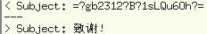
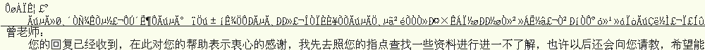

September 08, 2003
利用mhonarc转换汉语文本信件
 如果信体是没指明编码信息的纯汉语文本，利用mhonarc时会将这些GB212汉字变成乱码，下面在车东方案的基础上提出一个解决办法。
如果信体是没指明编码信息的纯汉语文本，利用mhonarc时会将这些GB212汉字变成乱码，下面在车东方案的基础上提出一个解决办法。
 车东的方案，可以把有编码信息的字串解码，见右图，却不能处理无编码信息的汉字串。
假定已经有mbox格式的文件mb,则用以下命令可将其成功地导成html文件：
$perl -MMIME::Words=:all -pi.bak -e 's/=\?.+\?=/decode_mimewords $&/eg' mb
$mhonarc -reverse -sort mb
$perl -pi -e's/&#x([a-fA-F0-9][a-fA-F0-9]);/pack("C", hex($1))/eg' `ls *.html`
结果可见下面的对照图。$mhonarc -reverse -sort mb
$perl -pi -e's/&#x([a-fA-F0-9][a-fA-F0-9]);/pack("C", hex($1))/eg' `ls *.html`

参考文献：
功能丰富的 Perl：一行程序 101
http://www-900.ibm.com/developerWorks/cn/linux/sdk/perl/l-p101/index.shtml
Comments
这我倒没想过，hehe，跟鬼子打交道，光交流就让我头疼不已。:)
只是奇怪车东的方案中为什么没有提到这个问题？是不是因为操作系统或环境变量配置的问题造成的，不具有共性？
mhonarc的老版本里都不支持i18n, 要不送封email告诉作者将这行程序加到他的新version里?
Posted by: 六翼的天使 at September 10, 2003 12:40 AMPost a comment